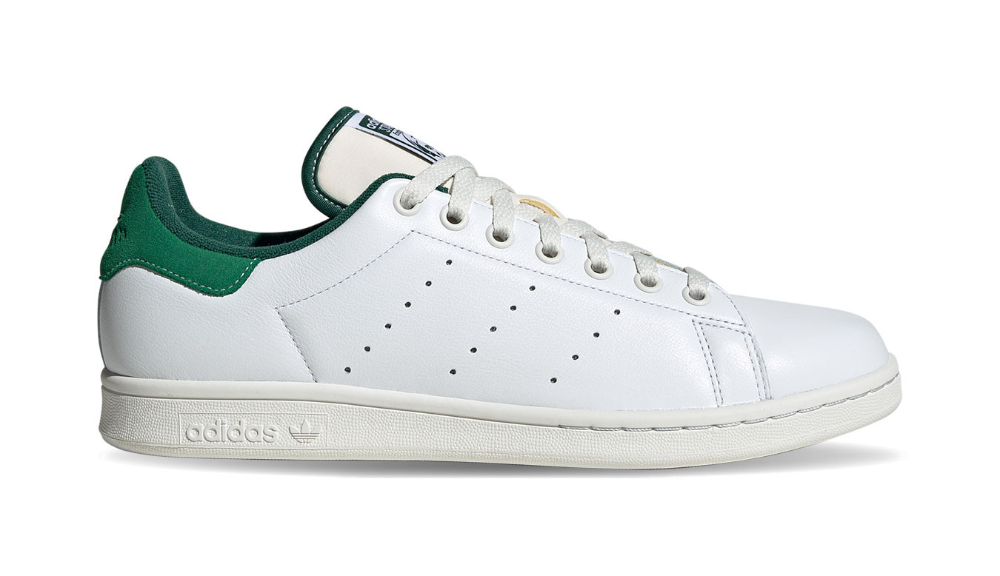
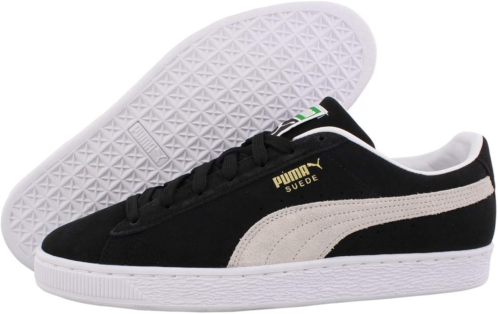

10 รุ่นรองเท้ายอดนิยม
Nike Air Max 90

เปิดตัวในปี 1990 เป็นรองเท้าวิ่งที่มาพร้อมเทคโนโลยี Air Max ที่ช่วยลดแรงกระแทก และมีดีไซน์คลาสสิกที่ยังได้รับความนิยมจนถึงปัจจุบัน
Adidas Ultraboost

รองเท้าวิ่งประสิทธิภาพสูงที่ขึ้นชื่อเรื่องความสบายและแรงส่งพลังในการวิ่ง ด้วยพื้น Boost และหน้าผ้า Primeknit
Converse Chuck Taylor All Star

รองเท้าผ้าใบดีไซน์เรียบง่ายที่เป็นไอคอนของแฟชั่นมาตั้งแต่ยุค 1920s นิยมใส่ในชีวิตประจำวันและงานแฟชั่น
New Balance 574

รองเท้าลำลองที่ได้รับความนิยมจากดีไซน์เรียบง่าย ใส่สบาย เหมาะทั้งกับการเดินทางและใช้งานทั่วไป
Nike Air Force 1

รองเท้าระดับตำนานของ Nike ที่เปิดตัวตั้งแต่ปี 1982 ได้รับความนิยมอย่างต่อเนื่องในวงการแฟชั่นสตรีท
Adidas Stan Smith
รองเท้าเทนนิสที่กลายมาเป็นแฟชั่นไอเท็ม มาพร้อมดีไซน์มินิมอล ใส่ง่ายกับทุกชุด
Vans Old Skool

รองเท้าสเก็ตสุดคลาสสิกจาก Vans มีแถบข้างเป็นเอกลักษณ์ โด่งดังในหมู่วัยรุ่นและสายสตรีท
Reebok Classic Leather

รองเท้าลำลองสไตล์ย้อนยุคจากยุค 80s ผลิตจากหนังแท้ ให้ความรู้สึกนุ่มและใส่สบาย
Puma Suede Classic
รองเท้าผ้ากำมะหยี่รุ่นฮิตที่ได้รับความนิยมในวงการฮิปฮอปและแฟชั่นยุค 90s
Asics Gel-Lyte III

รองเท้าวิ่งจาก ASICS ที่โดดเด่นด้วยลิ้นรองเท้าแบบแยกกลาง และเทคโนโลยี GEL รองรับแรงกระแทก